Cleaning and Applying Grease to the Output Queue Injector
Purpose
This procedure provides instructions for cleaning and applying grease to the Output Queue Injector and Injector Housing to reduce bleach and buffer crystal buildup.
What is Affected
The Output Queue Injector bleach/buffer overspray leads to a dirty Output Queue;
Crystals eventually build up enough to occlude the Output Queue Presence Sensor.
This can cause a “MTU Detected After Load Movement” Error (081.000.00069)
Furthermore, the crystals on the plastic entry rails can cause MTUs to drift and jam against the metal stack rails at the handoff position.
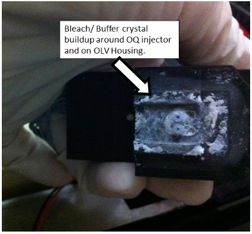
Parts and Materials Required
- Proper PPE
- Allen Wrench Set
- Cotton swab
- Dow Corning High Vacuum Grease
- DI water
- Ethanol
- 50% bleach solution
- Output Queue Injector (if older than 6 months)
- Per-Pump Tubing set (if older than 3 months)
Time Required
Purpose

|
Warning—The Output Queue is considered a "dirty" area.
Be very conscientious of contamination risks. |
- Put on proper PPE.
- Shutdown the Panther System.
- Open the Right Side system panel.
 Unplug the Output Queue OLV Board.
Unplug the Output Queue OLV Board.
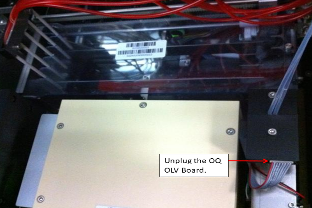
- Loosen the Output Queue OLV Housing thumbscrew.
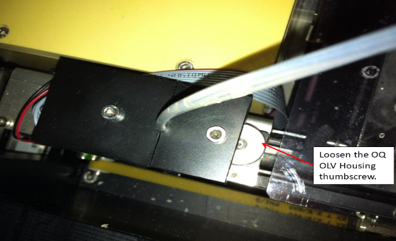
- Place an absorbent pad over the Output Queue for protection.
- Remove the Output Queue OLV Housing/Injector and place on the absorbent pad.

|
Note—The Output Queue Injector will still be connect to the pump. |
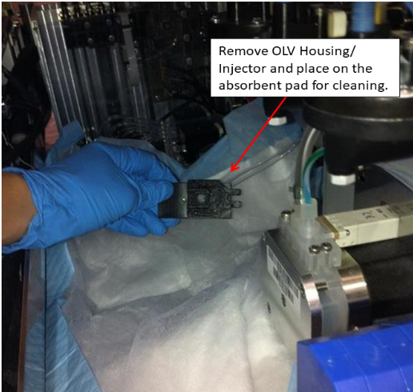
- Remove the Injector and OLV board from the housing.
| Note—If fluid is found in the Housing, or near the OLV board, the OQ Injector is faulty and needs to be Replaced; or, if the Injector is more than 6 months old, Replace It. |
- Clean the Housing and Injector with 50% bleach to prevent any contamination.
 | Change Gloves |
- Rinse with DI Water, and remove any bleach/buffer buildup.
- Dry the Housing and Injector.
- Install the Injector and OLV board into the Housing.
- Replace the absorbent pad.
- Clean any debris from the Output Queue OLV mount location with bleach and DI Water.
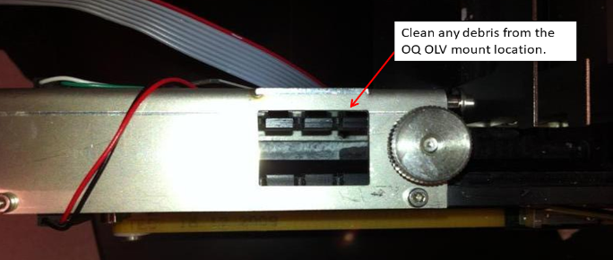
- Use a cotton swab and ethanol to wipe the Output Queue MTU presence sensor shown below.
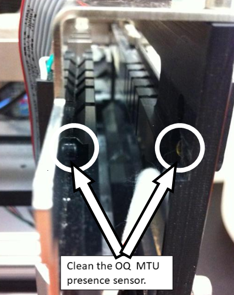
- Clean the black plastic Output Queue entrance rail.
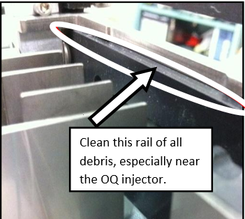
- Locate the Output Queue Injector and Housing.
- Insert the injector into the Injector housing.


- Spread Dow Corning High Vacuum grease around the Injector and Housing as in the photo below.


|
|
Note—Check for grease over the injectors.
No grease should be present on the injector.
If grease is present: Place the injectors in a beaker and use service software to clear the grease out.
|
An example of too much grease is seen in the photo below.
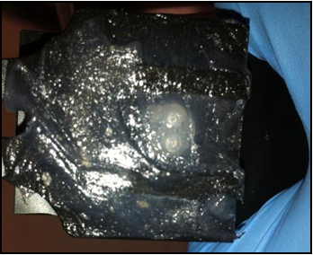

|
Change gloves. |
- Replace Buffer bottle "B" with a service bottle to keep the Panther inventory current.
- Top off the bleach bottle. (Or, be prepared to replace Universal Kit "B" following service.)
- Power on the Panther System.
- Open the Service Software.
- Initialize only the Output Queue Peri-Pump.
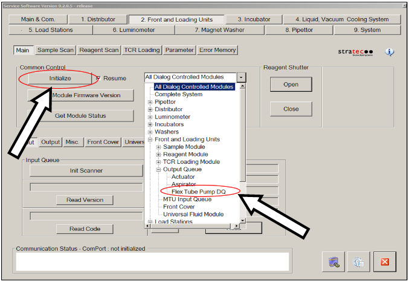
- Place the Injector over an empty receptacle as shown below.
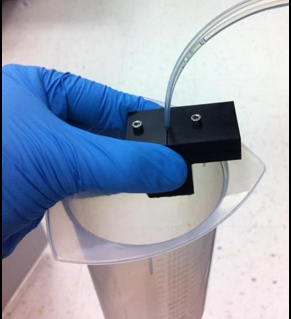
- Run the Peri-Pump to clear any grease from the Injector tips by selecting Start in the Deactivation / Peri Pump section of the Output Queue tab.
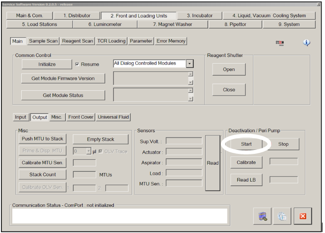
- Select Stop when both streams are confirmed to be dispensing.
| Note—If either stream does not dispense, check all connections, or the Peri-Pump tubing may need to be replace. OR, if the Peri-Pump tubing is more than 3 months old, replace it. |
- Replace the OLV Housing/Injector.
- Wipe away the excess grease.
- Tighten the Output Queue OLV Housing thumbscrew.
- Plug in the Output Queue OLV Board.
- Replace the original Buffer "B" bottle -or- Replace Universal Fluids kit "B".
- Top off the bleach bottle as needed.
- Close the Right Side system panel.
- Start the Panther GUI, and perform a full for verification.
- Confirm there are no Output Queue dispense errors during prime.
 button at the top of the page to send feedback, comments, or change requests.
button at the top of the page to send feedback, comments, or change requests.